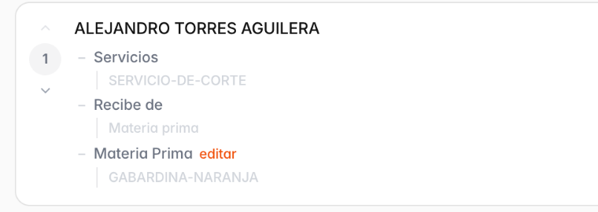
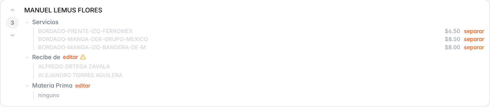
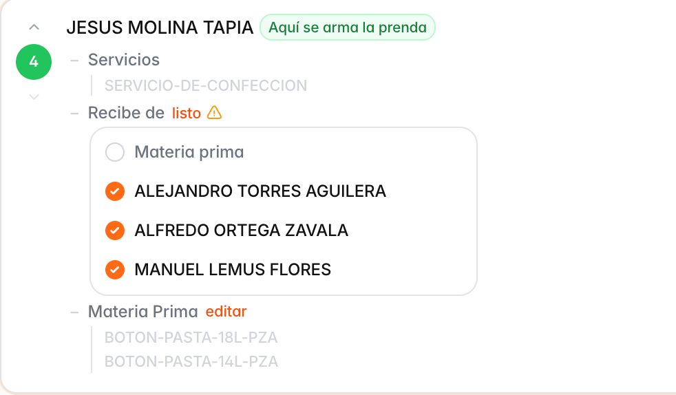
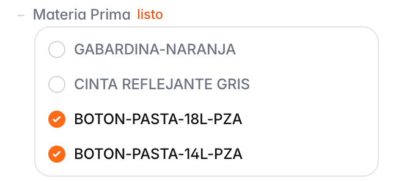
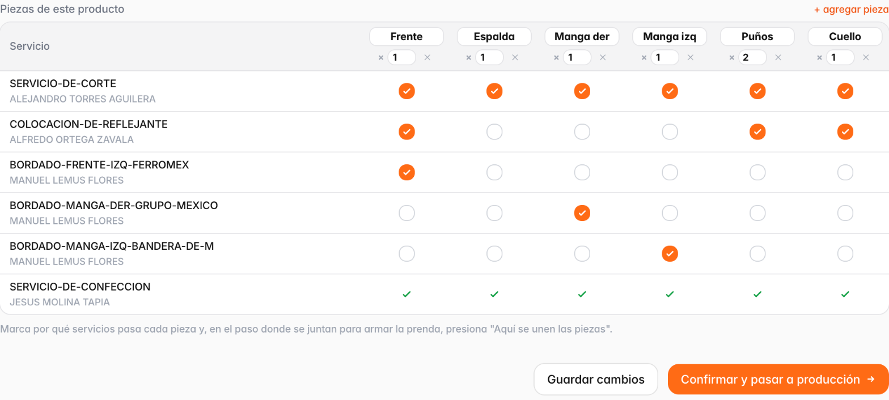
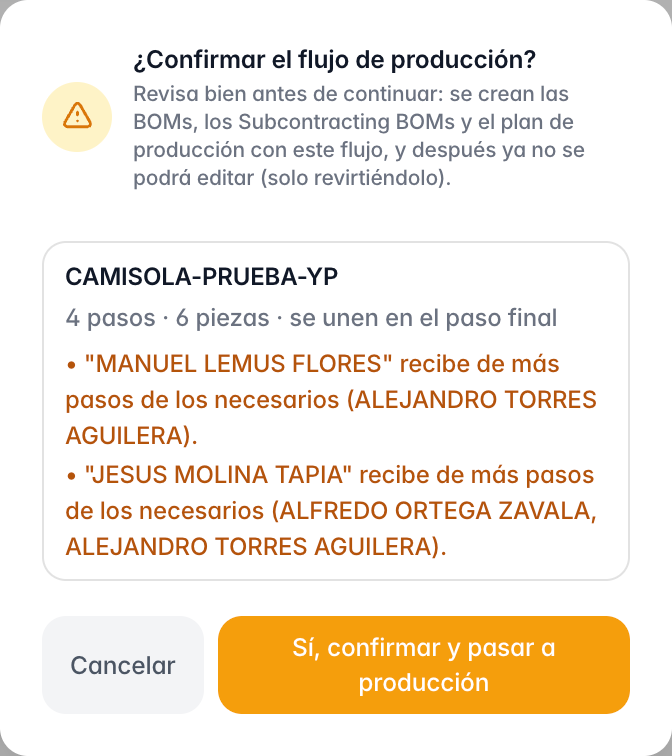
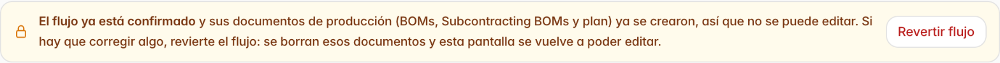

Guía rápida para dejar listo el recorrido de cada prenda antes de pasar a producción.
En esta pantalla se define por qué talleres pasa la prenda, en qué orden, qué recibe cada uno y qué piezas trabaja.
Lo que diga esta pantalla es exactamente lo que se le encargará a cada taller.

1 2 3 4 5 6

| Marca | Cuándo |
|---|---|
| Materia prima | El taller arranca de cero, normalmente el corte. Puede haber varios a la vez. |
| Un paso | Recibe lo que ese taller ya trabajó. Viene así por defecto. |
| Varios pasos | Ahí se juntan caminos. Ejemplo: confección recibe de bordado, reflejante y corte. |


A B C D E

Haz clic en el ⚠ para leer el aviso completo.
| Aviso | Qué hacer |
|---|---|
| Faltan datos en este paso | Completa el taller o el servicio en Costear. |
| No alimenta a ningún otro | Al paso siguiente le falta marcarlo en Recibe de. |
| ⚠ junto a Recibe de | Si una pieza sí llega directo de ese paso, déjalo. Si no, quítalo. |
| “ahí está marcada …” | En el paso de unión quedó una palomita. Quítala. |
| “todavía hay trabajo por pieza” | La unión está antes de tiempo. Muévela. |
| “no le llega …” | Revisa la columna de esa pieza y el Recibe de. |
| “se asume que pasan todas” | Falta una palomita en ese paso. |